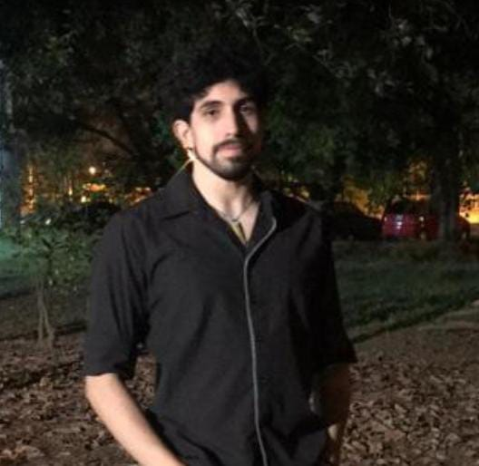

Primario y Secundario Completos: Escuela Parroquial N°8079 Nuestra Señora de la Merced
Finalización de cursado de Ingeniería Industrial, a espera de corrección de tesis: Universidad Nacional de Salta
First Certificate in English Aprobado: Asociación Cultural Argentino Británica de Salta
Japonés Básico 1 Aprobado: Fundación Pallay de Salta
Expriencias Laborales
200 horas de Prácticas profesionales supervisadas como Ingeniero: Petit Plast S.A.
Skills
Proactividad
Creatividad
Adaptabilidad
Trabajo bajo presión
Liderazgo
Foto

Hobbies
Gimnasia Artística
Parkour
Kung Fu Wing Tchun
Videojuegos
Guitarra
Piano
Animes
Interés en Henry
Estudio esta carrera porque noto que hay una gran cantidad de demanda para programadores.
Tengo la expectativa de poder conseguir un trabajo sin mucha dificultad una vez finalice la carrera, en lo posible, de alguna empresa internacional.